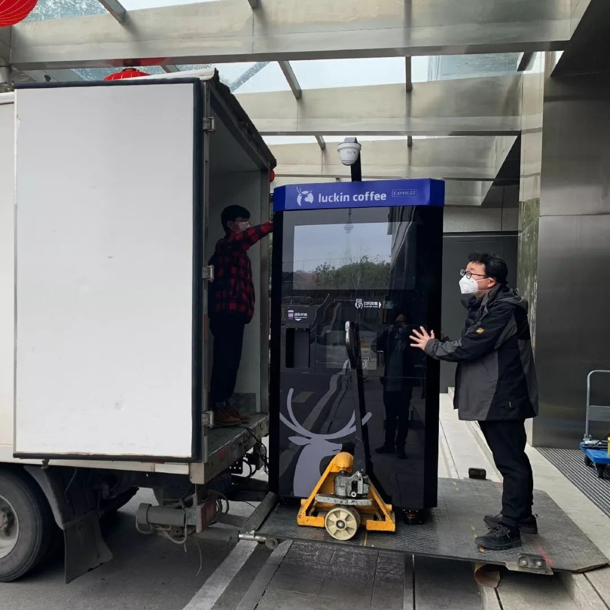
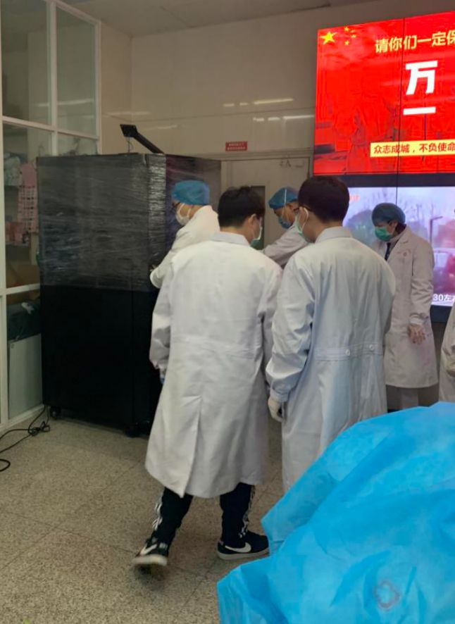
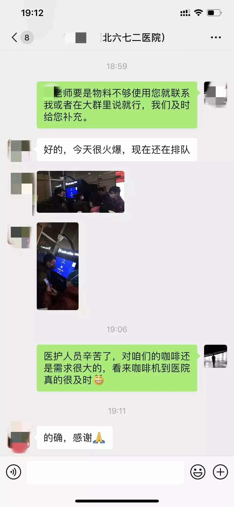
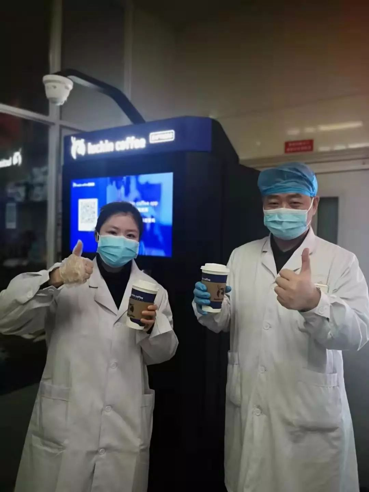

口述实录 | 快递小哥搞定金银潭医护难题：我送的不是快递，是救命的人啊！
原文链接 备份链接 一天接送一个医护人员可以节省4个小时，接送100个就是400小时，400个小时，医护人员能救多少人，怎么算我都是赚的。 口述 | 汪 勇 整理 | 吴 雪 我是个快递员，也是个“组局”的人。 2月13日凌晨5点，我在 …

困难面前，自黑自救
5天内，4个瑞幸咖啡员工要把一台无人咖啡机运进武汉六七二医院。
运送对于封城后的武汉来说，困难重重。小区封锁、物资受阻、通行困难……要在没车、没人的情况下，把一台超过400斤的大家伙运进医院，还要找齐原材料，让医生们喝上免费的热咖啡无疑是一个挑战。

这是一个4个人和3万人的“战疫故事”，而这样的故事，将继续在武汉与全国的医院上演。
居家隔离17天后，突如其来的复工
2月8日，距离武汉封城已经过去17天，瑞幸咖啡武汉分公司的咖啡机维修师小陈，突然被拉进一个微信工作群。群里一共29人，有各部门的负责人，还有CEO钱治亚。里面立刻复工的消息让小陈“噌”一下从床上坐了起来。
和他一起开工的，还有管物流的小毛、管IT的小刘，以及管运营的老吕。
5天之内，把一台调试为“免费模式”的无人咖啡机运进武汉六七二医院是他们接到的任务。而此时的武汉，断物流、断原料，各小区全面封闭，除了全国各地的3万瑞幸员工，他们“再无近军可援”。
而在五天前的早晨，钱治亚和各流程关键领导层成立了一只“特别行动组”。继企业为抗击新冠肺炎捐出一千万后，寻找“更直接”的方式再做点什么是他们一直在思考的事情。

在接到六七二医院请求后，他们很快发现，需要一杯热咖啡的医院不止这一家，而相比门店外送，和门店一样的出品标准，全过程无人工参与、无接触、更安全，铺设速度快、效率高的无人咖啡机更适合“战疫”。最重要的是，它们能24小时工作，确保给每位需要“来一杯续命”的医生护士供上热咖啡。
阻碍重重，“自救”行动上演
全员居家办公的团队飞速运转起来，然而大家很快发现：困难面前，人人平等。
武汉作为首批投放城市，年前已有一台瑞幸无人咖啡机投入运营，可物流停运，超过400公斤的设备寸步难移。雪上加霜的是，桶装水供应商响应号召停业抗疫，无人咖啡机的杯子、杯盖又是为满足机器压盖特制的，全武汉仅余1000套，而4个身在武汉的同事服从防疫管理被困小区，唯一接受过无人咖啡机调试培训的工程师被隔离在了千里之外……
在总部的协调下，情况出现了转机，一套“救援”行动有条不紊地展开。
农夫山泉总公司打开武汉总仓库，供他们取水；负责武汉原材料转运的荣庆物流，协调保供货车帮忙“全城提货”；顺丰以运送特殊物资的方式，从上海仓寄来了杯子、杯盖；工程师小陈从8日开始上起了“网课”，夜以继日地熟悉材料和调试流程；远在北京的IT团队在两天之内赶工出一套“特别版”免费系统，并在4小时内完成了原本需时一周的调试；医院给四个武汉员工开了证明，他们终于出了小区……
“挂了啊挂了！都关在家里还能去哪？正开黑呢！”刚出家门，瞒着家里复工的IT工程师小刘接到了家人的电话，平复心情后他还是选择继续“说谎”。这时，小毛正要开着全公司唯一没限行的那台车，把所有人送到无人咖啡机所在的写字楼。此时是2月11日。

还来不及顾及家人的情绪，关卡又出现了。出于安全考虑，瑞幸所有无人零售终端都上了锁，拥有电子认证的同事被隔离在了武汉城外。时间宝贵，小刘和总公司IT智囊团联合设备供应商，直接“黑掉了”自家设备。
“咖啡可以喝了？给我搞一杯！”
当天下午两点，无人咖啡机终于出现在六七二医院门口。为了确保安全，坚持“无接触配送”的医院有近二十名医生护士一声不吭地赶来帮忙，让行动四人组感到一丝暖心。

老吕在运输车旁边站了很长时间，他心中的那口气还松不下来。“哥！又有问题啊！”他担心的事情出现了。无人咖啡机使用高比例进口设备，对供电要求苛刻，需要两条独立的供电线支持运转，而医院里只有接线板。
但连续近十天的“野路子”操作，让行动组对如何解决“在五金店全关的武汉买电线”驾轻就熟。“换了两台车，开了两个别公司的仓库，最后，还‘黑了’自家的咖啡机。”第二天一早，老吕开着从神州调来的未限行车辆，跑到瑞幸门店装修供应商的仓库，直接开仓取货。
晚上八点，第一杯“武汉医院版”加浓焦糖美式在672医院正式出炉。“咖啡可以喝了？给我搞一杯！”夜里，老吕给小毛发了个医院微信群的截图，小毛捧着手机，睡了个难得的好觉。

战“疫”面前，这杯免费
然而，装机只是开端。
672医院完成入驻后，武汉协和、科技大学天佑医院等十多家医院也立刻需要装机和使用。基于防疫安全管理，瑞幸工作人员无法进入医院进行填料和维护，虽然给每家医院都一次性配置了足量的咖啡豆、饮水、杯子和糖浆，但没有持续维护，一切努力都将白费。
为此，负责员工培训的瑞幸大学部门“临时招收学员”，为医院工作人员开发了工程师专属的培训通道，远程速成设备维护、装料与消杀流程，还安排了工程师、运营和院方的“二对一”支援小组：设备有维护、填料、清洁任务时，机器会自动提醒，支援小组通过咖啡机摄像头协助作业。
与此同时，为了保证优先武汉医院对咖啡的需求，分散在全国的无人咖啡机，也开始向武汉“紧急集合”，连同所有原材料一起整车向武汉发货，海内外供应商也开始加速生产，从瑞士向国内空运咖啡机设备，为医护人员加油。

同一天，瑞幸宣布向全国三甲医院开放无人终端，并承诺疫情完全结束前，为医护人员免费提供咖啡。
“这是我们民族企业该有的温度，挺好的，接着干！”说到这里，好几天没怎么睡的老吕突然来了精神。

打过硬仗之后，他们相信坚持下去，总会遇见春天。
本文仅代表作者观点，不代表本刊立场
原文链接 备份链接 一天接送一个医护人员可以节省4个小时，接送100个就是400小时，400个小时，医护人员能救多少人，怎么算我都是赚的。 口述 | 汪 勇 整理 | 吴 雪 我是个快递员，也是个“组局”的人。 2月13日凌晨5点，我在 …
原文链接 备份链接 澎湃新闻记者 韩雨亭 通讯员 李俊平 2月15日，武汉市汉口医院120急救站护士彭璟在一线抗疫已经30天，今天让她最高兴的一件事情是——“我终于痛痛快快地洗了一把脸。” 作为急诊室护士，30天来，她一直坚守在抗疫一线， …
原文链接 备份链接 _ _ _ _ 武汉这个地方，不南不北，所以他们会有北方人的蛮劲，也会有南方人的精明。喜欢过小日子。而且热爱武汉爱得不由分说，很多武汉人，是不容任何人说武汉一点不好的。 _ _ _ _ 记者 | …
原文链接 备份链接 【财新网】（记者 高昱 萧辉）武汉一线已经有1102名医务人员确诊新冠感染，而湖北省全省的感染数1502例。这意味着在武汉和湖北，医务人员感染新冠占当地总感染人数的比例，至2月11日已经达到5.6%（武汉） …
原文链接 备份链接 这一周，有超过500位读者同我们分享了自己关于爱的故事。今天，我们选取了其中的一些故事，以配合这个名为「情人」的节日——今时今日，这一天似乎看起来不合时宜，但正是因为今时今日，我们才该庆幸，还好，我们还有爱情。 策 …